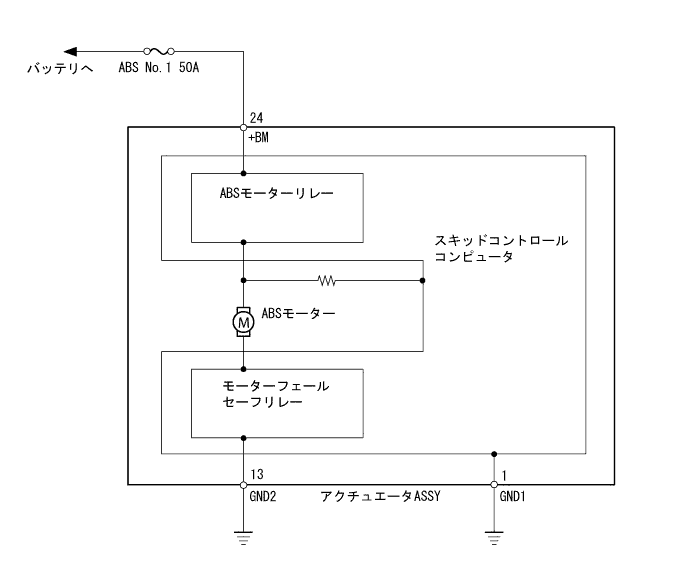
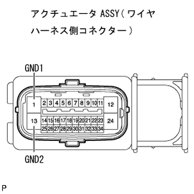

DTC C1251/51 Motor System Malfunction |
| DTC No. | DTC Detection Condition | DTC Output Related Items |
|---|---|---|
| C1251/51 |
|
|

| Step 1 | Inspect Wire Harness and Connector (Actuator Assembly - Body Ground) |
Check that the brake actuator assembly connector is properly engaged.
Turn the IG OFF and disconnect the brake actuator assembly connector.
Check that the connector case and terminals are free of deformation and corrosion.
 |
Using the SST (Toyota electrical tester), inspect the resistance between the wire harness side connector of the brake actuator assembly and body ground.
| Tester Connection | Condition | Standard |
|---|---|---|
| 1 (GND1) - Body ground | Always | Below 1 Ω |
| 13 (GND2) - Body ground |
|
| ||||
| OK | |
| Step 2 | Perform Active Test (ABS Motor Relay) |
Using the SST (TaSCAN), drive the ABS motor relay following the screen and check that the ABS motor operates normally (motor operating sound is heard). (see)
|
| ||||
| OK | |
| Step 3 | Recheck DTC |
Clear the DTCs and check the DTCs again. (see)
| Result | Proceed to |
|---|---|
| OK | A |
| Motor system malfunction code is output again | B |
|
| ||||
| A | ||
| ||